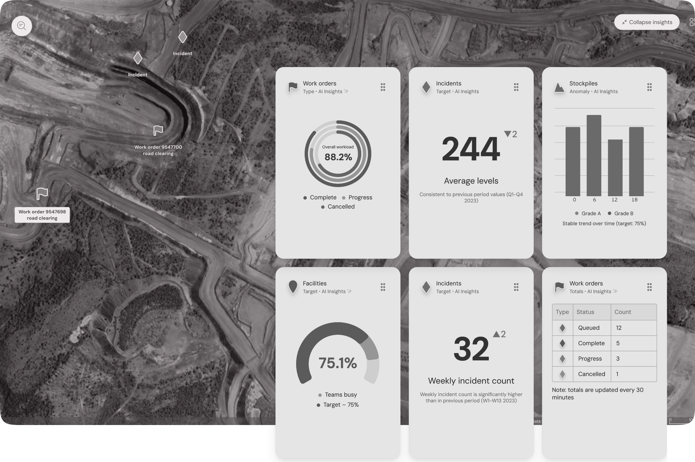

Spatial digital twin
Processing company. 4-dimensional immersive Spatial Collaboration Tool (ArcGIS). Led complex prototyping and design system development; collaborated on user research, workshops and delivery support.
Result: faster asset inspections and planning, and less time/cost spent on field visits.

Spatial digital twin
Processing company. 4-dimensional immersive Spatial Collaboration Tool (ArcGIS). Led complex prototyping and design system development; collaborated on user research, workshops and delivery support.
Result: faster asset inspections and planning, and less time/cost spent on field visits.
“Faster asset inspections and planning, and less time/cost spent on field visits.”